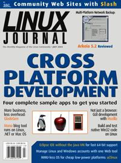

Shutdown Archive web server
Search:
Linux Journal
Issue #123/July 2004

Features
Rapid Application Development with Python and Glade
by David Reed
When you're writing complicated business apps, spend more time on your business logic and let GladeGen do the rest.
Cross-Platform Network Applications with Mono
by Ian Pointer
Build and run a useful blogging app and get a jump on .NET-compatible development.
Developing for Windows on Linux
by Joey Bernard
Use these tools from the MinGW Project to write, maintain and test Win32 apps on any GNU system.
A GUI for ps(1) Built with Mozilla
by Nigel McFarlane
Make your apps run anywhere your browser does with the development framework that's already on your desktop.
Indepth
Eclipse Goes Native
by John Healy, Andrew Haley and Tom Tromey
Now you don't have to wait for a JVM to run your Java app on a new platform.
Clusters for Nothing and Nodes for Free
by Alexander Perry, Hoke Trammell and David Haynes
The processing power you need for big nightly jobs is all around you, and the desktop users won't miss it.
Embedded
uClinux for Linux Programmers
by David McCullough
Do you want the development ease of Linux or the low price of an MMU-less processor? How about both?
Toolbox
At the Forge
Slash
by Reuven M. Lerner
Cooking with Linux
It's a Cross Platform, All Right!
by Marcel Gagné
Paranoid Penguin
Secure Anonymous FTP with vsftpd
by Mick Bauer
Column
EOF
by Ibrahim Haddad
Carrier Grade Linux
Review
Arkeia 5.2 Network Backup
by Dan Wilder
Departments
From the Editor
Letters
upFRONT
Best of Technical Support
New Products
Archive Index
Shutdown Archive web server
Search:
Copyright © 1994 - 2018
Linux Journal
. All rights reserved.